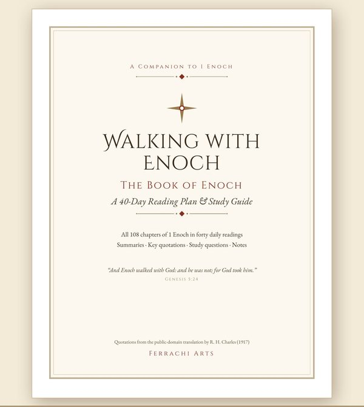

English
Walking with Enoch — 40-Day Book of Enoch Study Guide
A 64-page printable PDF that takes you through all 108 chapters of 1 Enoch in 40 short daily readings, with summaries, study questions and space for notes.
Key quotations come from the public-domain R. H. Charles translation (1917).
View on Etsy